Understand what a logistic regression is, how to prepare data for a logistic regression, and how to evaluate a model.
Founded by Steph Locke (that’s me!), Locke Data is a data science consultancy focused on helping organisations get the most out of their data science resources. While we’re happy to do data science projects for you, we’d really like to set you up to do them yourself!
Locke Data offers a broad range of services including:
If you’d like more information about our services please get in touch via our website, itsalocke.com.
I am a Microsoft Data Platform MVP with a decade of business intelligence and data science experience.
Having worked in a variety of industries – including finance, utilities, insurance, and cyber-security – I’ve tackled a wide range of business challenges with data.
However, I’m probably best known for my community activities; including presenting, training, blogging and speaking on panels and webinars.
If you have any questions about today’s session, community activity, or data science in general, please get in touch via Locke Data, or my Twitter, @SteffLocke
A logistic regression is a linear regression, applied to categorical outcomes by using a transformation function.
A linear regression uses a line of best fit (the old \(y = mx + c\)) over multiple variables to predict a continuous variable.
If you’re trying to predict whether someone survives (1) or dies (0), does it make sense to say they’re -0.2 alive, 0.5 alive, or 1.1 alive?
We can measure the probability of someone surviving. This gives us data in the range \([ 0 , 1 ]\) which is better, but still not our ideal of \([-\infty,+\infty]\).

As probability can never be less than 0 or greater than 1, we get a range between \([0,+\infty]\).
The final step in this transformation is to take the log of the odds, which is commonly called the logit. This gets us to \([-\infty,+\infty]\).
| logits | odds | probs | pred_class |
|---|---|---|---|
| -4 | 0.0183156 | 0.0179862 | FALSE |
| -3 | 0.0497871 | 0.0474259 | FALSE |
| -2 | 0.1353353 | 0.1192029 | FALSE |
| -1 | 0.3678794 | 0.2689414 | FALSE |
| 0 | 1.0000000 | 0.5000000 | TRUE |
| 1 | 2.7182818 | 0.7310586 | TRUE |
| 2 | 7.3890561 | 0.8807971 | TRUE |
| 3 | 20.0855369 | 0.9525741 | TRUE |
| 4 | 54.5981500 | 0.9820138 | TRUE |
glm()The glm function is used for performing logistic regressions. It can be used for other linear models too.
glm(vs~ mpg , data=mtcars, family = binomial(link="logit"))
##
## Call: glm(formula = vs ~ mpg, family = binomial(link = "logit"), data = mtcars)
##
## Coefficients:
## (Intercept) mpg
## -8.8331 0.4304
##
## Degrees of Freedom: 31 Total (i.e. Null); 30 Residual
## Null Deviance: 43.86
## Residual Deviance: 25.53 AIC: 29.53R uses a formula system for specifying a model.
~) is used for saying “predicted by”-1 to your formula. to predict by all other variables e.g. y ~ .+ to provide multiple independent variables e.g. y ~ a + b: to use the interaction of two variables e.g. y ~ a:b* to use two variables and their interaction e.g. y ~ a*b (equivalent to y ~ a + b + a:b)y ~ log(x) or use I() when adding values e.g. y ~ I(a+b)For more info, check out ?formula
na.action can be set to amend the handling of missings in the datamodel,x,y controls whether you get extra info about the model and data back. Setting these to FALSE saves spaceglm| Function | Purpose |
|---|---|
| coefficients | Extract coefficients |
| summary | Output a basic summary |
| fitted | Return the predicted values for the training data |
| predict | Predict some values for new data |
| plot | Produce some basic diagnostic plots |
| residuals | Return the errors on predicted values for the training data |
You can provide a glm with continuous and categorical variables.
Many ways to explore your data for outliers, patterns, issues etc.
library(caret)
featurePlot(mtcarsVars, mtcarsOut)Commonly, we will take a training sample and a testing sample.
set.seed(77887)
trainRows<-createDataPartition(mtcarsOut, p=.7 , list=FALSE)
training_x<-mtcarsVars[trainRows,]
training_y<-mtcarsOut[trainRows]
testing_x<-mtcarsVars[-trainRows,]
testing_y<-mtcarsOut[-trainRows]Sampling before scaling etc prevents information about the test data leaking into our model. By preventing such leaks we get a truer view of how well our model generalises later.
Perform z-score scaling in R with the scale function:
x<-rnorm(50, mean = 50, sd = 10)
x_s<-scale(x, center = TRUE, scale = TRUE)
summary(x_s)
## V1
## Min. :-2.47800
## 1st Qu.:-0.51156
## Median :-0.02056
## Mean : 0.00000
## 3rd Qu.: 0.72480
## Max. : 2.75145Use caret to scale multiple variables simultaneously and get a reusable scaling model for applying to test data, and eventually production data.
transformations<-preProcess(training_x)
scaledVars<-predict(transformations,training_x)
knitr::kable(t(summary(scaledVars)))| mpg | Min. :-1.6256 | 1st Qu.:-0.7609 | Median :-0.1762 | Mean : 0.0000 | 3rd Qu.: 0.5485 | Max. : 2.2450 |
| cyl | Min. :-1.2291 | 1st Qu.:-1.2291 | Median :-0.1418 | Mean : 0.0000 | 3rd Qu.: 0.9455 | Max. : 0.9455 |
| disp | Min. :-1.3730 | 1st Qu.:-0.8722 | Median : 0.2015 | Mean : 0.0000 | 3rd Qu.: 0.8418 | Max. : 2.0043 |
| hp | Min. :-1.35226 | 1st Qu.:-0.75519 | Median :-0.02242 | Mean : 0.00000 | 3rd Qu.: 0.38467 | Max. : 2.48799 |
| drat | Min. :-1.3944 | 1st Qu.:-0.8474 | Median : 0.0989 | Mean : 0.0000 | 3rd Qu.: 0.6198 | Max. : 2.3736 |
| wt | Min. :-1.8341 | 1st Qu.:-0.5987 | Median : 0.3213 | Mean : 0.0000 | 3rd Qu.: 0.5562 | Max. : 2.3459 |
| qsec | Min. :-1.6263 | 1st Qu.:-0.5026 | Median :-0.1018 | Mean : 0.0000 | 3rd Qu.: 0.6703 | Max. : 2.5046 |
| am | Min. :-0.7142 | 1st Qu.:-0.7142 | Median :-0.7142 | Mean : 0.0000 | 3rd Qu.: 1.3392 | Max. : 1.3392 |
| gear | Min. :-0.8462 | 1st Qu.:-0.8462 | Median :-0.8462 | Mean : 0.0000 | 3rd Qu.: 0.3702 | Max. : 1.5866 |
| carb | Min. :-1.0299 | 1st Qu.:-0.4521 | Median :-0.4521 | Mean : 0.0000 | 3rd Qu.: 0.7033 | Max. : 3.0142 |
caret is very useful for these
Common methods for coping with missing data:
I try to build some candidate models:
fullmodel<-glm(training_y~ ., data=training_x, family = binomial(link="logit"))
steppedmodel<-step(fullmodel, direction="both",trace = FALSE)summary(steppedmodel)
##
## Call:
## glm(formula = training_y ~ wt + qsec, family = binomial(link = "logit"),
## data = training_x)
##
## Deviance Residuals:
## Min 1Q Median 3Q Max
## -3.747e-05 -2.100e-08 -2.100e-08 2.100e-08 3.668e-05
##
## Coefficients:
## Estimate Std. Error z value Pr(>|z|)
## (Intercept) -1150.82 949688.13 -0.001 0.999
## wt -57.98 55673.18 -0.001 0.999
## qsec 74.94 58397.10 0.001 0.999
##
## (Dispersion parameter for binomial family taken to be 1)
##
## Null deviance: 3.1492e+01 on 22 degrees of freedom
## Residual deviance: 2.8881e-09 on 20 degrees of freedom
## AIC: 6
##
## Number of Fisher Scoring iterations: 25broomUse broom to make tidy versions of model outputs.
library(broom)
# Coefficients
knitr::kable(tidy(steppedmodel))| term | estimate | std.error | statistic | p.value |
|---|---|---|---|---|
| (Intercept) | -1150.81869 | 949688.13 | -0.0012118 | 0.9990331 |
| wt | -57.98390 | 55673.18 | -0.0010415 | 0.9991690 |
| qsec | 74.94005 | 58397.10 | 0.0012833 | 0.9989761 |
broomUse broom to make tidy versions of model outputs.
# Fitted data
knitr::kable(head(augment(steppedmodel)))
## Warning: Deprecated: please use `purrr::possibly()` instead
## Warning: Deprecated: please use `purrr::possibly()` instead
## Warning: Deprecated: please use `purrr::possibly()` instead
## Warning: Deprecated: please use `purrr::possibly()` instead
## Warning: Deprecated: please use `purrr::possibly()` instead| .rownames | training_y | wt | qsec | .fitted | .se.fit | .resid | .hat | .sigma | .cooksd | .std.resid |
|---|---|---|---|---|---|---|---|---|---|---|
| Hornet 4 Drive | 1 | 3.215 | 19.44 | 119.59772 | 93130.23 | 0 | 1.90e-06 | 1.23e-05 | 0 | 0 |
| Hornet Sportabout | 0 | 3.440 | 17.02 | -74.80359 | 60604.06 | 0 | 8.00e-07 | 1.23e-05 | 0 | 0 |
| Valiant | 1 | 3.460 | 20.22 | 163.84490 | 128950.92 | 0 | 3.70e-06 | 1.23e-05 | 0 | 0 |
| Duster 360 | 0 | 3.570 | 15.84 | -170.77076 | 132543.30 | 0 | 3.90e-06 | 1.23e-05 | 0 | 0 |
| Merc 240D | 1 | 3.190 | 20.00 | 163.01374 | 126134.55 | 0 | 3.50e-06 | 1.23e-05 | 0 | 0 |
| Merc 230 | 1 | 3.150 | 22.90 | 382.65926 | 295784.32 | 0 | 1.94e-05 | 1.23e-05 | 0 | 0 |
broomUse broom to make tidy versions of model outputs.
# Key statistics
knitr::kable(glance(steppedmodel))| null.deviance | df.null | logLik | AIC | BIC | deviance | df.residual |
|---|---|---|---|---|---|---|
| 31.49235 | 22 | 0 | 6 | 9.406483 | 0 | 20 |
deviance(fullmodel)
## [1] 4.780243e-10AIC(fullmodel)
## [1] 22training_pred<-ifelse(predict(steppedmodel,training_x)>0, "1","0")
confusionMatrix(training_pred,training_y)
## Confusion Matrix and Statistics
##
## Reference
## Prediction 0 1
## 0 13 0
## 1 0 10
##
## Accuracy : 1
## 95% CI : (0.8518, 1)
## No Information Rate : 0.5652
## P-Value [Acc > NIR] : 2e-06
##
## Kappa : 1
## Mcnemar's Test P-Value : NA
##
## Sensitivity : 1.0000
## Specificity : 1.0000
## Pos Pred Value : 1.0000
## Neg Pred Value : 1.0000
## Prevalence : 0.5652
## Detection Rate : 0.5652
## Detection Prevalence : 0.5652
## Balanced Accuracy : 1.0000
##
## 'Positive' Class : 0
## testing_pred<-ifelse(predict(fullmodel,testing_x)>0, "1","0")
confusionMatrix(testing_pred,testing_y)
## Confusion Matrix and Statistics
##
## Reference
## Prediction 0 1
## 0 5 2
## 1 0 2
##
## Accuracy : 0.7778
## 95% CI : (0.3999, 0.9719)
## No Information Rate : 0.5556
## P-Value [Acc > NIR] : 0.1575
##
## Kappa : 0.5263
## Mcnemar's Test P-Value : 0.4795
##
## Sensitivity : 1.0000
## Specificity : 0.5000
## Pos Pred Value : 0.7143
## Neg Pred Value : 1.0000
## Prevalence : 0.5556
## Detection Rate : 0.5556
## Detection Prevalence : 0.7778
## Balanced Accuracy : 0.7500
##
## 'Positive' Class : 0
##